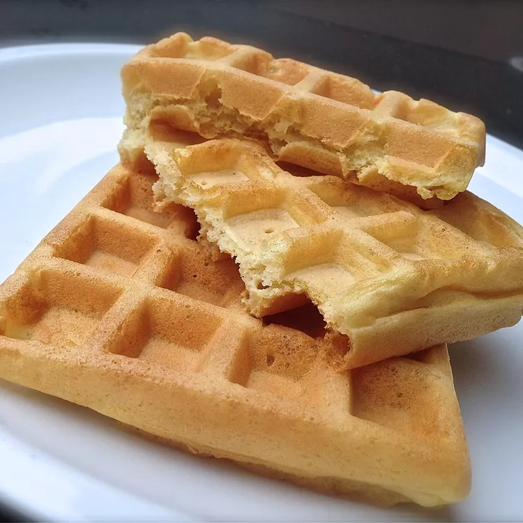

Gluten-Free Waffles

Description
Best gluten free waffles I have tasted, contains buckwheat so hope you like it!
Ingredients
- 1 cup buckwheat flour
- 1 and Half cup milk
- 2 eggs
- 1 cup almond flour
- Third cup vegetable oil
- 1 tbsp baking powder
- 1 tsp salt
Directions
- Preheat waffle iron.
- Stir milk, buckwheat, almond flour, vegetable oil, eggs, baking power, sugar and salt together until batter is smooth.
- Working in batches, ladle batter into waffle iron and cooking until golden and crisp, 3-5 minutes.